i was pretty depressed at the time, so i made a lot of low effort dark stuff.
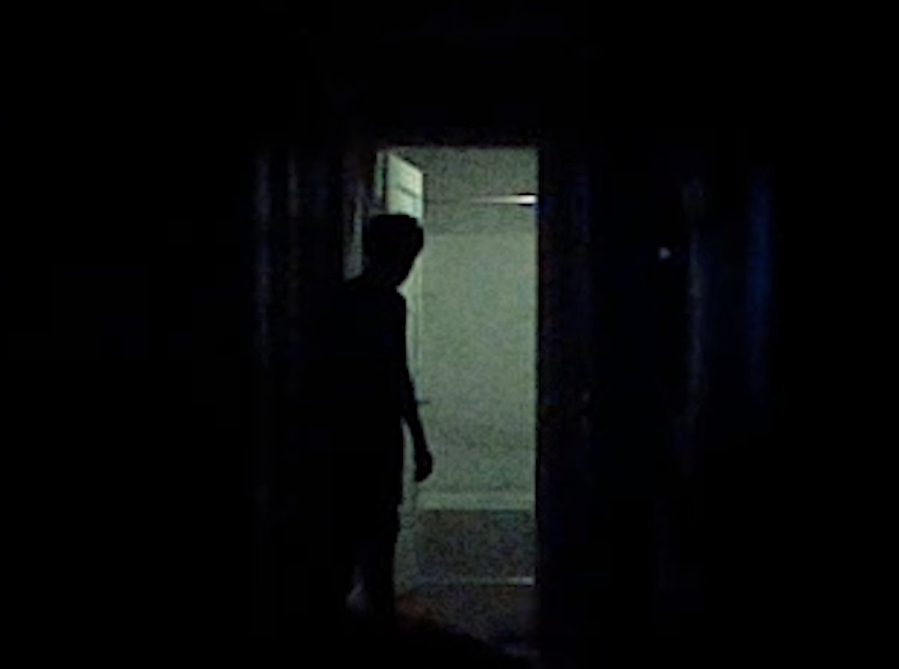
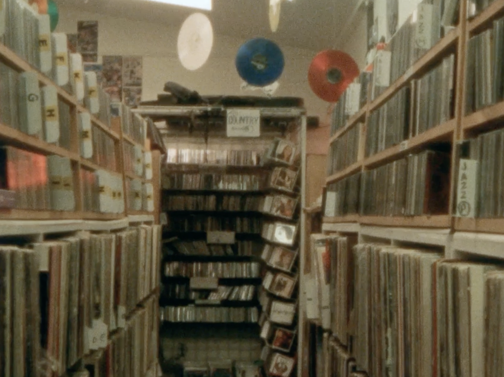
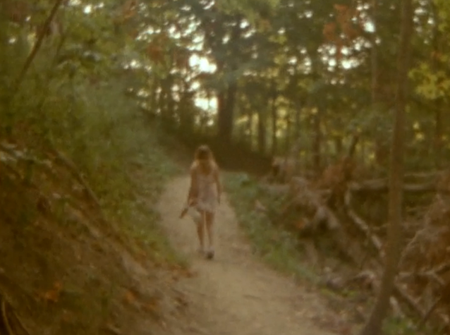
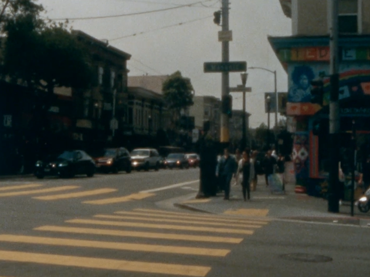
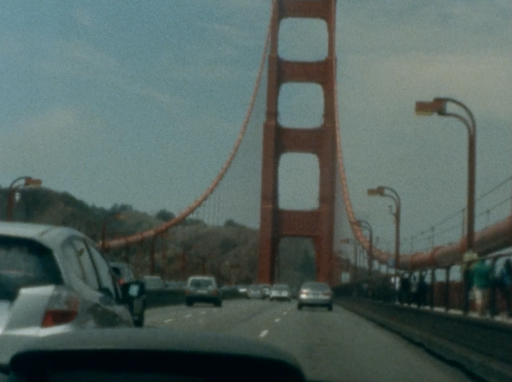
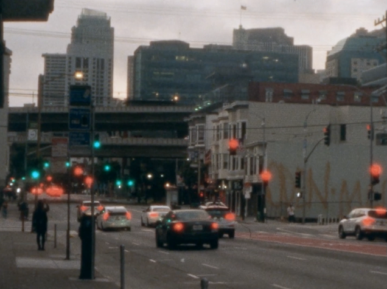
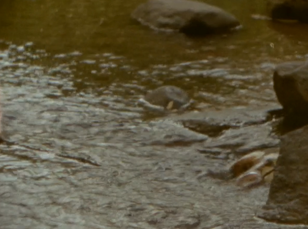
a video expressing how i felt about my life at the time.
the original went on for like 6 minutes. it featured a huge variety of strange layered footage and sounds. for now i'm only comfortable showing this clip
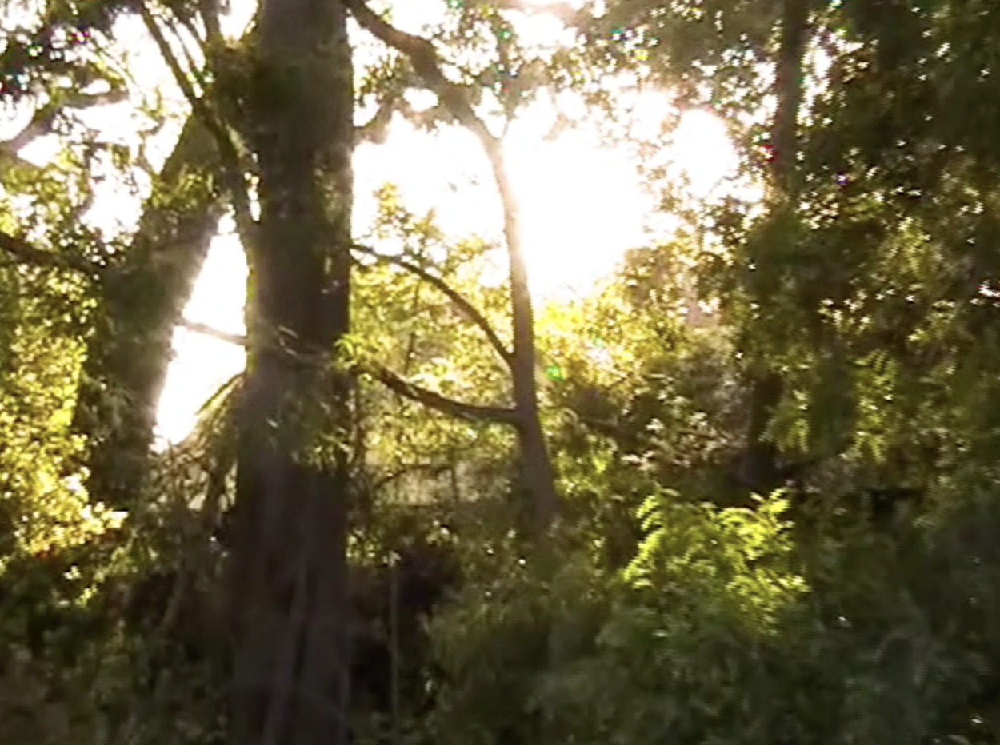
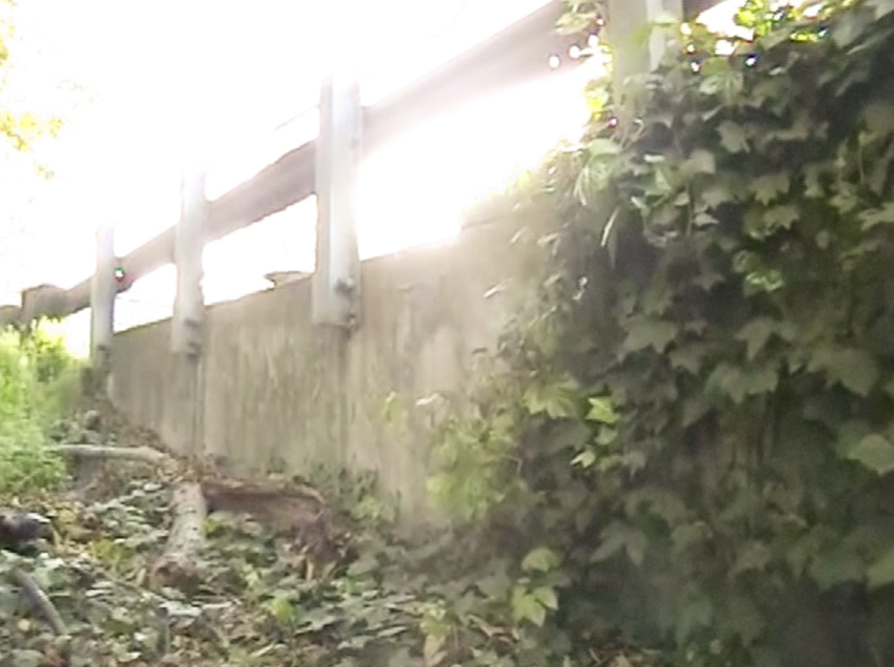
a video expressing my deep, nostalgic, bittersweet feelings about childhood
i'm proud of this video, even though i think it is really bad. i felt depressed at the time, so it took a lot out of me to make it.
i hope to remake it at some point when i can give it 100% effort
a 2 min portrait of someone very close to me. only showing a snippet for now
song is GLASS CHIME by INOYAMALAND
just a camera gimbal test video. shot in the rain in palo alto, ca.
song is Memory Gongs by Cocteau Twins and Harold Budd
nothing too special, various things shot on vhs, dvd, nintendo 3ds, mino flip, iphone 5s
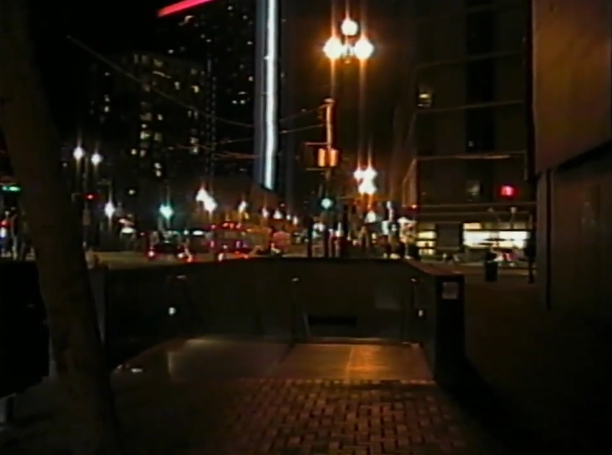
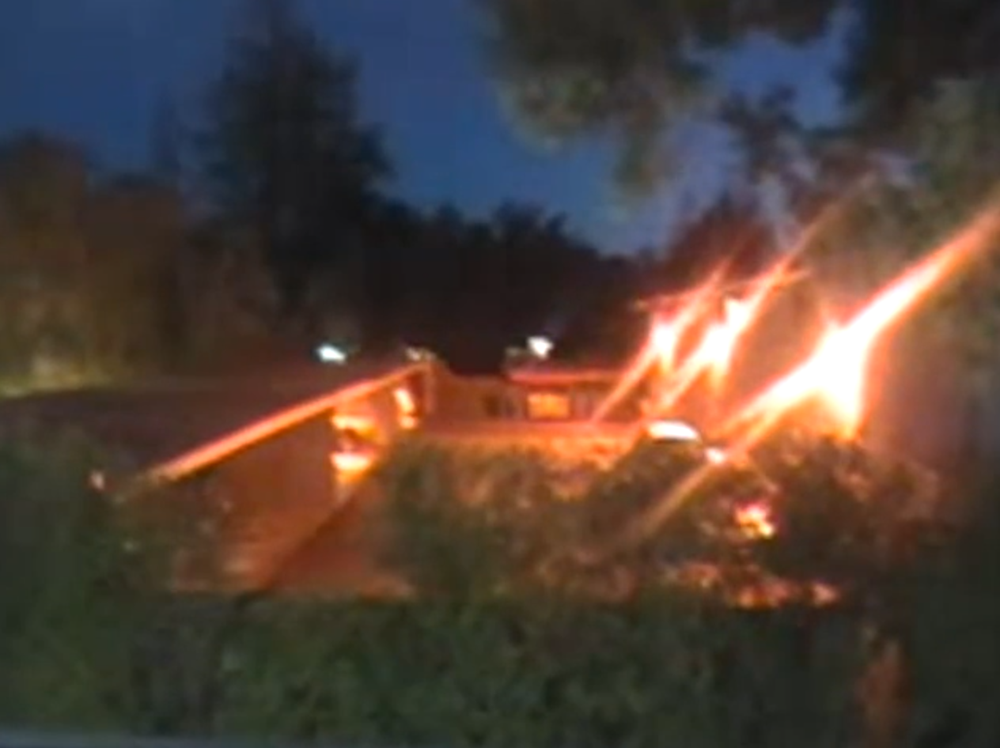
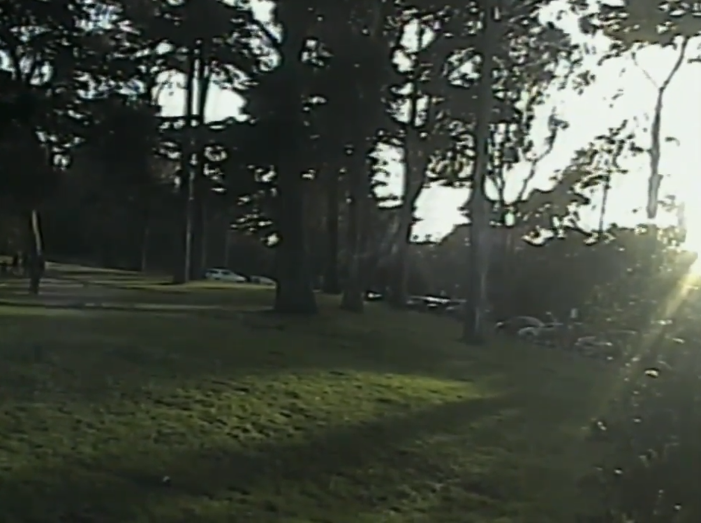
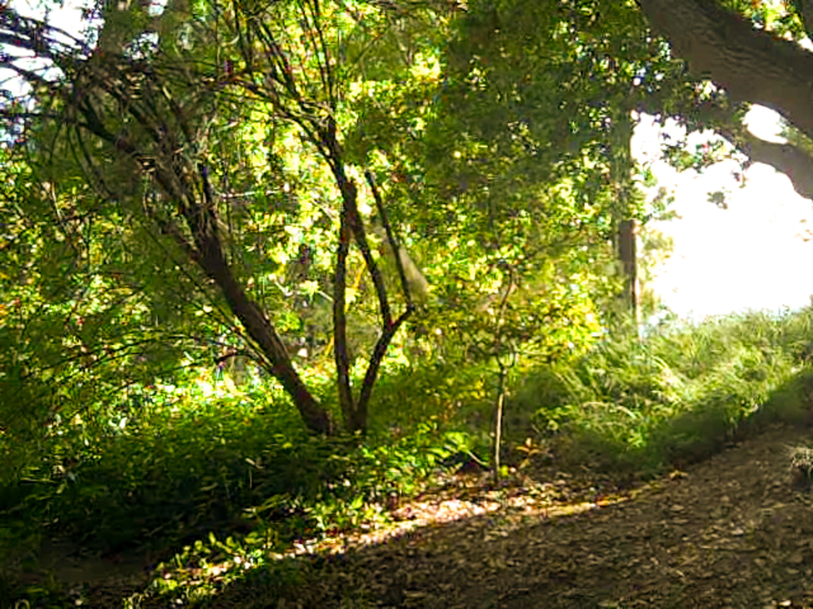
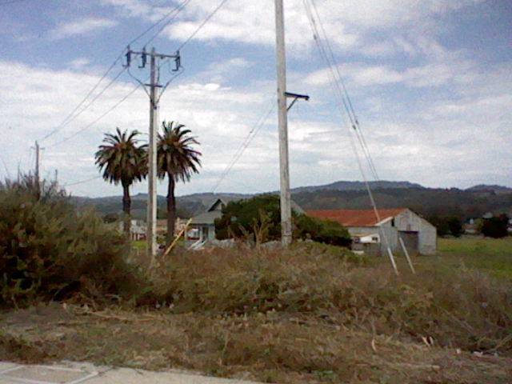
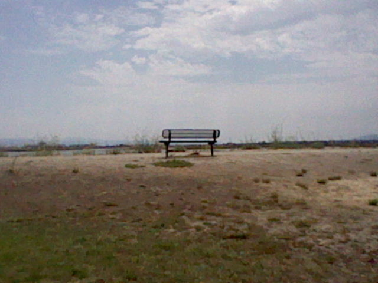
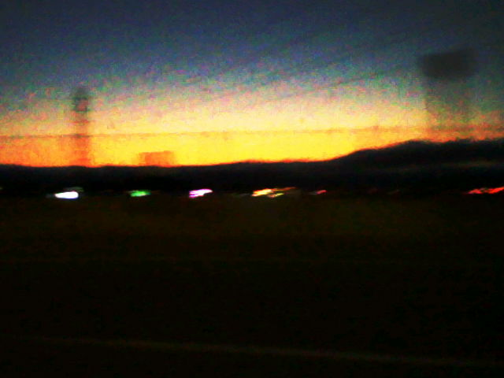
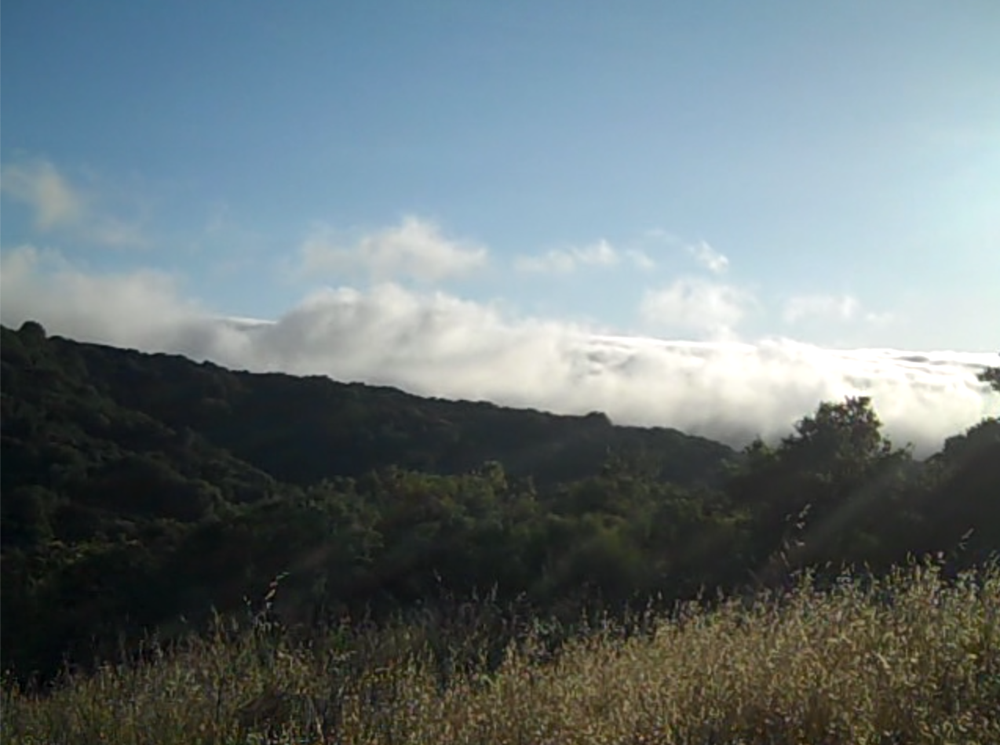
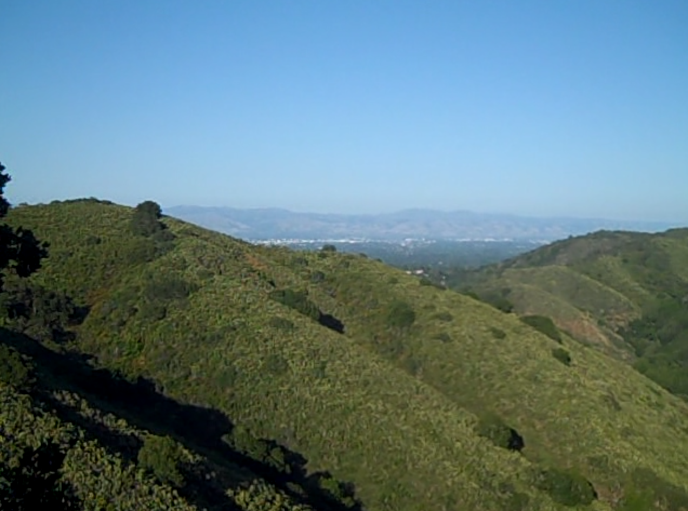


a lot of what i made was basically like 8bit chiptune idm type stuff, very low effort, very goofy, never put in more than like a few hours of effort into any of them. they kinda just cured my boredom sometimes.
about half of everything past 2021 is on my soundcloud
these are my favs: